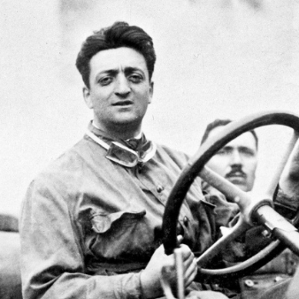
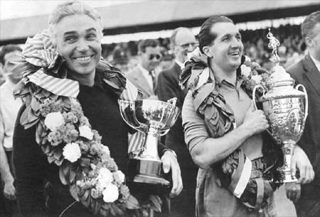
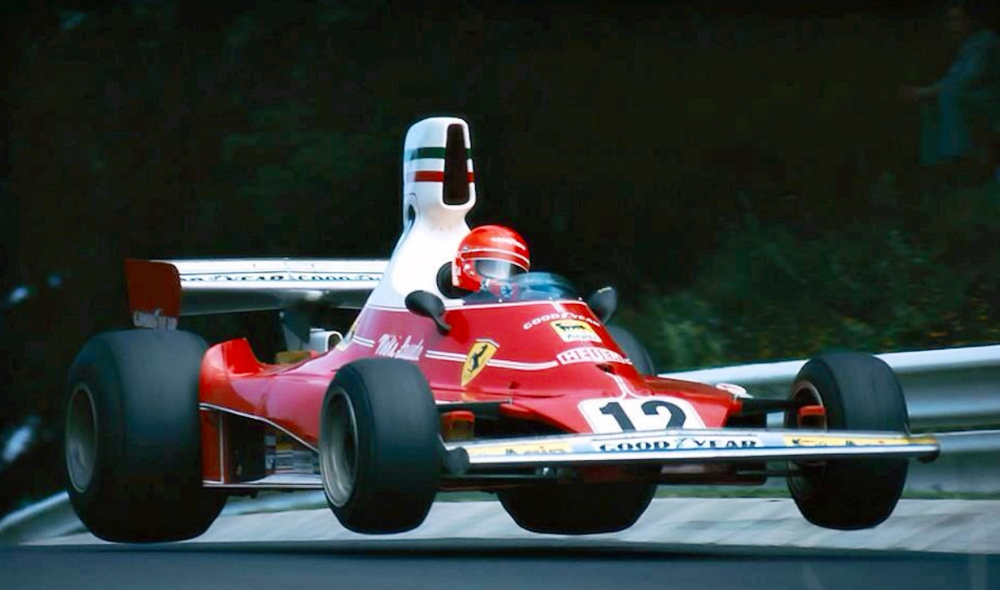
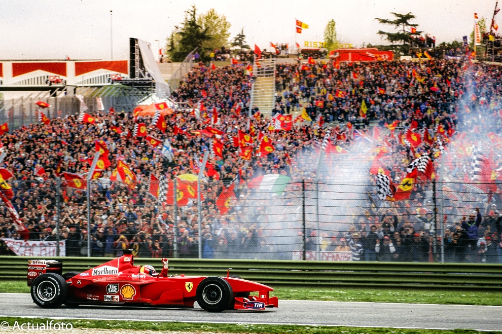

Scuderia Ferrari

The History of Ferrari
Ferrari joined Formula 1 in 1950, making them the only team to have competed in every season of the Formula One World Championship. Their debut was at the second round of the 1950 season, the Monaco Grand Prix. However the story of Ferrari starts years before.
Enzo Ferrari
It began with a young aspiring racer Enzo Ferrari who started his racing career in 1919 with Alfa Romeo as a driver and as an employee in its Milan sales depot. But, in 1929, he left to found his own racing team: Scuderia Ferrari. The team's first race was the 1930 Mille Miglia, using cars supplied by Alfa Romeo, and the first use of the Prancing Horse logo was at the 1932 24 Hours of Spa-Francorchamps.
The First Sports Car (125 S)
The first Ferrari sports car, as well as the first car to use Colombo's new engine, was the 1947 125 S. Purpose-built for sports car racing, it achieved the company's first victory at the 1947 Grand Prix of Rome, where it was driven by Franco Cortese. Ferrari itself tends to cast the 125 S's production as the starting point of its history, marking 1947 as its founding date during its anniversary celebrations.

Early Success
In 1952 Ferrari won its first Formula One season, and by 1957, just ten years after beginning to race, Ferrari had taken home three Formula One World Championships, three World Sportscar Championships, seven victories in the Mille Miglia, and two victories at the 24 Hours of Le Mans.
Successes and Failures (70s/80s)
By the mid-1970s, Ferrari once again saw success in F1. In 1975 and 1977 Niki Lauda won the drivers' title for the team, as did Jody Scheckter in 1979; they also won the constructors' title for three consecutive years, 1975–1977. In addition, Clay Regazzoni managed a close second place in the 1974 season, Lauda the same in 1976, and Carlos Reutemann third in 1978. Starting with the 1980 season, the team entered an extended title drought. Ferrari still struggled with keeping its cars competitive and up to date and in an attempting to fix this problem the team brought in new engineers, including John Barnard and Harvey Postlethwaite; the Postlethwaite-designed 126C2 won the team the 1982 and 1983 constructors' titles but Ferrari would continue to perform underwhelmingly until the late 1990s.
Recent Success
Ferrari dominated the start of the century with Michael Schumcher winning the drivers form 2000 to 2004 and the constuctors from 1999 to 2004. They won both titles with Kimi Raikkonen in 2007 and the constructors the following year. Since then, Ferrari has not won either title even with some of the greatest drivers such as Fernando Alonso and Sebastian Vettel but they have still been at the top of the field fighing for chapionships.
